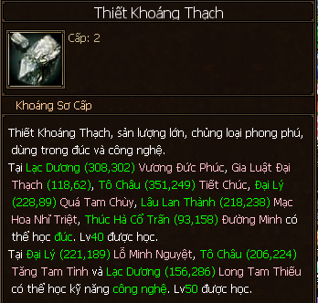
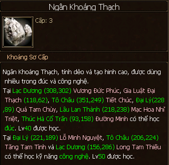
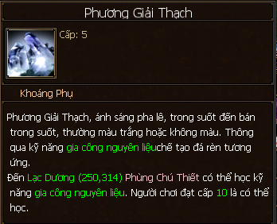
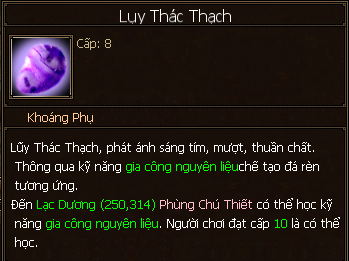
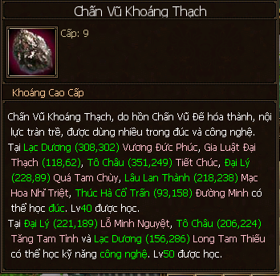

Khai Khoáng¶
- Khai khoáng để thu về các loại khoáng thạch dùng để chế tạo vũ khí bằng nghề Đúc, và nghề Công nghệ. Nghề này khá phổ biến với các acc nhỏ 5x thích tự chế những cây vũ khí cho riêng mình thay vì dùng thần khí sẵn có.
- Mua Cuốc đào khoáng sơ cấp trong tiệm tạp hóa và di chuyển ra các bản đồ để tiến hành đào.
- Trong quá khứ, việc thành thạo kỹ năng khai khoáng càng cao mang lại nhiều hiệu quả hơn (đào được nhiều hơn) trong hoạt động đào khoáng thế tộc, nhưng bây giờ thì không còn thế tộc nữa.
Học Nghề¶
- Có thể học ở các thành thị chính (chữ Thiết trên bản đồ) và nâng cấp về sau trong bang hội:
- Đại Lý: NPC Đồng Hóa Thiết (240, 90).
- Lạc Dương: NPC Tiết Đồng Chùy (309, 290).
- Tô Châu: NPC Trương Tiểu Hà (360, 230).
- Lâu Lan: NPC Đồng Kim Chùy (217, 235).
Thăng Cấp¶
- Đào khoáng cho đủ điểm thành thạo của cấp hiện tại và liên hệ NPC để thăng cấp.
- Cấp 1 - 5: thăng cấp tại NPC dạy khai khoáng ở các thành chính, tiêu tốn vàng và kinh nghiệm.
- Cấp 5 - 10: thăng cấp tại NPC Mã Ứng Hùng trong thành thị bang hội (66, 57; chữ Công trên bản đồ), tiêu tốn vàng, kinh nghiệm, điểm cống hiến bang.
Phân Bố¶
| Cấp kỹ năng | Bản đồ | Khoáng sản chính | Khoáng sản phụ | Tiêu hao tinh lực/lần khai khoáng |
|---|---|---|---|---|
| 1 | Vô Lượng Sơn Kiếm Các Đôn Hoàng Kính Hồ Tung Sơn Thái Hồ |
Đồng Khoáng Thạch 
|
3 | |
| 2 | Tây Hồ | Thiết Khoáng Thạch (Mỏ Sắt)  |
Hạt Thiết Khoáng Thạch 
|
4 |
| 3 | Nhĩ Hải | Ngân Khoáng Thạch (Mỏ Bạc)  |
Bạch Tân Khoáng Thạch 
|
5 |
| 4 | Nhạn Nam | Hàn Thiết Khoáng Thạch 
|
Thạch Anh Thạch 
|
6 |
| 5 | Long Tuyền | Kim Khoáng Thạch (Mỏ Vàng) 
|
Phương Giải Thạch  |
7 |
| 6 | Thương Sơn | Huyền Thiết Khoáng Thạch 
|
Thấu Huy Thạch 
|
8 |
| 7 | Nhạn Bắc | Thủy Tinh Khoáng Thạch 
|
Chất Thạch 
|
9 |
| 8 | Võ Di | Phỉ Thúy Khoáng Thạch 
|
Lụy Thác Thạch Huy Lục Thạch 
|
10 |
| 9 | Thạch Lâm | Chấn Vũ Khoáng Thạch  |
11 | |
| 10 | Thảo Nguyên Mai Lĩnh |
Long Huyết Khoáng Thạch | 12 |
Các khoáng sản phụ (bán sinh khoáng) có thể dùng kỹ năng sống Gia Công Nguyên Liệu để gia công thành Đoạn Thạch - một nguyên liệu trong chế tạo vũ khí.

LingYun ghi chép, bổ sung hình ảnh vào 21:24 29/7/2018